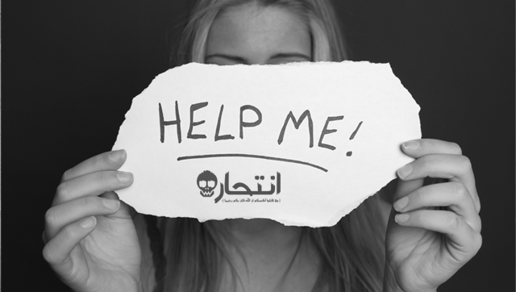

إن الألم الذي يخلفه فقدان عزيز علينا في هاوية الانتحار يظل داخلنا مدة ليست بالقليلة، وكثيراً ما تحدثت إليَّ شقيقتي، وهي معلمة، عن أطراف الحديث التي تتبادلها مع طالباتها وتطل من خلالها علامات منذرة بفقدان الرغبة في استكمال المسير. ولا عجب، فطبقاً لإحصاء منظمة الصحة العالمية، يقدِم نحو مليون فرد على الانتحار سنوياً أغلبهم في فئة المراهقة والمسنين.
الانتحار هو محاولة جادة لوضع نهاية لألم غير محتمل، وباب خلفي للهرب من ظروف ضاغطة، منقادين بروح من العجز وفقدان الأمل والحيل، ومن منظور شخص لا يفكر الآن بالانتحار، وهو أكثرنا في الأغلب، لا يمكننا فهم كيف يمكن لأحدهم إغفال وجود مباهج في الحياة جنباً إلى جنب مع آلامها، وكيف يمكن تجاهل وجود فرصة في الغد لحياة أفضل، أو كيف يمكن أن تتعطل غريزة البقاء بالشكل الذي تستسلم فيه كلية للموت.
ومن منظور شخص فكر يوماً بالموت، وهو أغلبنا تقريباً، لا يمكننا فهم لماذا لم تمر الفكرة مرور الكرام مع البعض كما مرت معنا.
* هل يمكن أن يكون الانتحار محاولة للتكيف؟
إن النظرة السائدة، مجتمعياً، للتفكير في الانتحار هي اعتباره عرضاً طارئاً مرضياً ارتبط بالاكتئاب أو الذهان أو كعرض جانبي لبعض العقاقير، ولكن ماذا إن كان الأمر أبعد من ذلك؟ وهل يمكن أن يكون الانتحار محاولة للتعامل مع ظروف ضاغطة؟ مخرجاً لتجنب المزيد من الألم؟ هذا ما تعرضه مدرسة "العلاج"؛ وهي رؤية الانتحار في ضوء ضعف مهارات حل المشكلات، ومهارات قيادة الشعور [الذكاء الوجداني]، وعليه تنصب جهودها بشكل كبير في هاذين الاتجاهين محققة نجاحات مشهودة.
وقد تكلم فرويد سابقاً ومن بعده المدرسة التحليلية عما سموه بغريزة الموت، وعن حملنا لدافع داخلي لإنهاء الأمر برمته، ربما للبدء من جديد أو لإفساد اللعبة، وأنا أحب أن أسمي هذه الغريزة بمحامي الموت، ومن منظور مدرسة "العائلة الداخلية" نحن نحتاج لقبول محامي الموت كأحد أفرادنا الداخليين، والترحيب به داخل دائرة الضوء، لأن طرده إلى اللاشعور يمكنه من العمل في الظلام، أبعد من حدود قيادتنا.
* أساطير ومعتقدات خاطئة عن الانتحار
- من يتحدث عن الانتحار لن يقدم عليه
الحقيقة: تقريباً، يبدي كل المنتحرين تلميحاً واحداً على الأقل يشير إلى عزمهم إنهاء حياتهم؛ فلا تستهين بأي إشارة من عزيز عليك تشير إلى راحة الموت، أو فكرة الانتحار، ولا تسخر من كلمات مثل: "سأرحل وستندمون" أو "مش لاقي حل"، حتى لو قالها هو بشكل ساخر أو مضحك.

- لا يقتل نفسه سوى مجنون
الحقيقة: أغلب المنتحرين كانوا في قواهم العقلية، ولا يشترط أن يبدو عليه مزاج عاصف، أو بؤس فظيع لتضع الانتحار كاحتمال.
- من يقرر الانتحار فلا مجال لإثنائه عنه
الحقيقة: أغلب المنتحرين لا يريدون الموت، يريدون أن ينتهي الألم فقط.
- الذين يقدمون على الانتحار هم أولئك المتكاسلين عن طلب المساعدة
الحقيقة: تشير الدراسات إلى أن نصف المنتحرين على الأقل ترددوا على مقدم مساعدة مرة واحدة على الأقل في الستة أشهر السابقة على الانتحار.
- الحديث عن الانتحار قد يلهم أحدهم التفكير فيه
الحقيقة: لا يمكن طرح فكرة الانتحار في عقل أحدهم بمجرد الحديث عنه، بالعكس يمكن لمناقشة الأمر بشكل صحّي أن تطفئ فتيل الفكرة.
* علامات تشير إلى تفكير أحدهم في الانتحار

- الحديث عن الانتحار.
- البحث عن مواد وعقاقير مميتة.
- الانشغال بفكرة الموت.
- فقدان الأمل في المستقبل.
- القيام بترتيبات غير مطمئنة ككتابة وصية أو إهداء مقتنيات ثمينة.
- الانعزال عن المحيطين.
- الانخراط في سلوكيات مؤذية كتعاطي الكحول والمخدرات والعلاقات الجنسية المتهورة.
- أي تغير مفاجئ وغير مبرر في الحالة المزاجية.
* الوقاية من الانتحار
إذا قبلنا بوجود غريزة الموت داخلنا مجاورةً لغريزة البقاء، فهل يمكننا وضع خطط استباقية لدعمنا ضد الأفكار الانتحارية؟ والجواب نعم، وإليك هذه الاقتراحات:
１- الترحيب بمحامي الموت
وأعني بذلك قبول غريزة الموت، فإن الطاقة المبذولة في كبتها وتجاهل وجودها يضاف إلى طاقتها لتنفجر أمامنا عند أول أزمة، ومحامي الموت لا يعمل فقط من أجل الانتحار، بل يقف خلف سلوكيات تدمير الذات بكافة صورها، من الإدمانات والعلاقات الخطرة وإيذاء النفس المادي، وقد يظهر في القيادة الخطرة، وعبور الطريق المتهور، وإدمان أفلام الرعب والتسلق الخطر.
２- صندوق الأمل
تطرح ايلانا پريناك فكرة مبتكرة كخطة استباقية، من خلال إعداد صندوق الأمل؛ وقد يكون بشكل فعلي من خلال صندوق أو ظرف أو ملف، وقد يكون بشكل إلكتروني من خلال بعض التطبيقات أو حتى مجلد داخل الهاتف، ونقوم بحفظ الصور ذات القيمة مع أحبابنا، واقتباسات ملهمة بالحياة، ورسائل للنفس أو من أشخاص محببين لنا، أو خطاب لأنفسنا من غريزة الحياة، وكذلك من يمكنه دعمنا عند الحاجة وبيانات التواصل معه، ونقوم بإعداده منفردين أو مع من نحب أو مع عملائنا، ونفتحه عند الأزمات.
３- الثبات في وجه الأزمات
من خلال عدم توفير الجهد في التدريب على مهارات حل المشكلات، والتعامل مع الأزمات، وكذلك مهارات قيادة الشعور والوجدان.
４- علاقة ذات معنى
وهذه العلاقة تشمل نطاق العلاقة مع النفس، والعلاقة الصحية ذات القيمة مع الله "يعبر عنها بالروحانية"، وعلاقة مع فرد آخر على الأقل. نقوم باختبار قيمة الحياة داخل هذه العلاقة، والخروج بلا دفاعات وبشكل حقيقي، ونسميها دائرة الثقة.
* في النهاية
حتى إن لم يمكنك فهم دافع الانهيار داخل عزيز عليك، أو إذا لم تتمكن من إيجاد مبرر لنشاط محامي الموت داخله، فلا مجال سوى للتراحم والتعاطف مع الألم الذي يربض خلف هذه المحاولات، وكذلك تلمس دافع الحياة وغريزة البقاء ومحاولة دعمها على الأقل من خلال التفهّم، ولاتتردد في طلب المسعادة من مختصين في هذا المجال عبر الروابط أسفل الصفحة.المصدر: صحتك